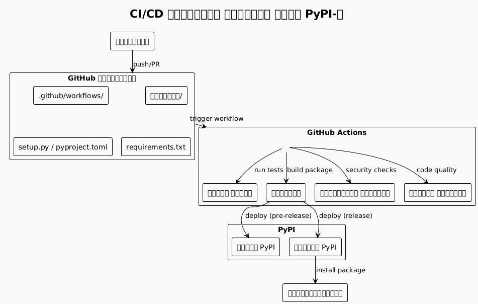
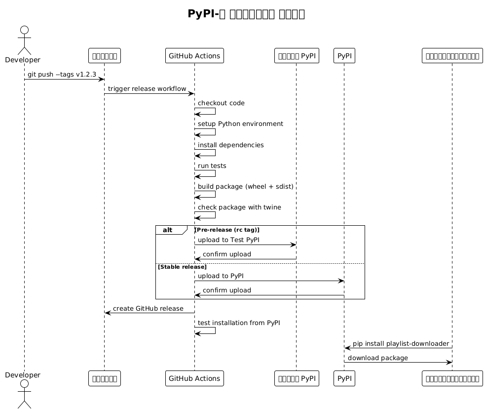
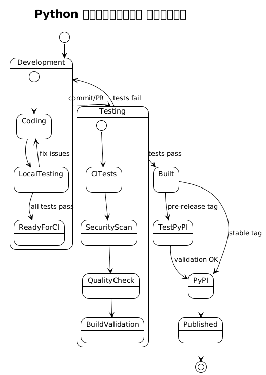
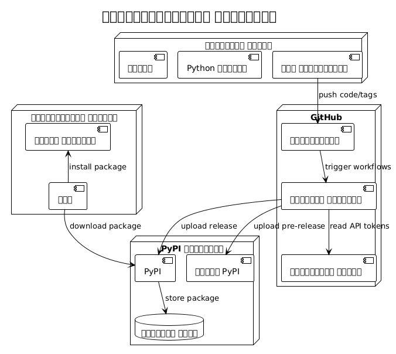
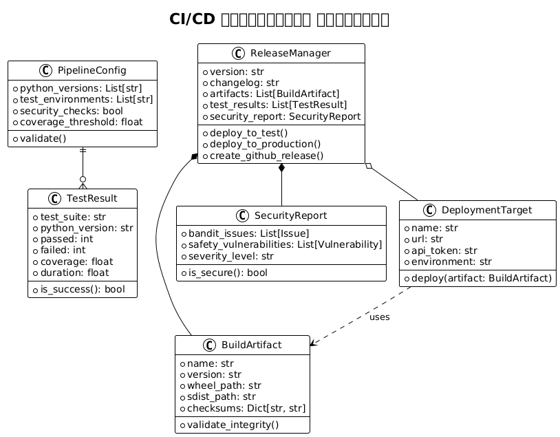

অংশ 2 : শিল্পায়ত করা এবং নিরাপদ করা উন্নত পাইথন CI/CD পাই্পলাইন
Publié le 18 July 2025
- ভূমিকা
- CI/CD পাইপলাইনের আর্কিটেকচার
- প্রকল্পের গঠন
- pyproject.toml ব্যবহার করে প্যাকেজ কনফিগারেশন
- CI/CD ওয়ার্কফ্লো - পরীক্ষা এবং গুণমান
- রিলিজ ও স্থাপন ওয়ার্কফ্লো
- আর্কিটেকচার ডায়াগ্রাম
- পাইপলাইনের অবজেক্ট ও মডেল
- রহস্যের কনফিগারেশন
- স্থানীয় উন্নয়ন স্ক্রিপ্ট
- সেরা অনুশীলন এবং সুপারিশ
- নিরীক্ষণ ও অবলক্ষ্য
- নিষ্কর্ষ
- পূরক সম্পদ
ভূমিকা
এই সিরিজের প্রথম অংশে, আমরা PyPI-এ একটি Python প্যাকেজের পরীক্ষা ও প্রকাশকে স্বয়ংক্রিয় করতে একটি সহজ কিন্তু কার্যকর CI/CD পাইপলাইন নির্মাণ করেছি।
এখন এই পাইপলাইনটিকে পেশাদারীকরণ করার সময়। এই দ্বিতীয় অংশে, আমরা :
-
আধুনিক pyproject.toml স্ট্যান্ডার্ডে মাইগ্রেট করুন,
-
গুণমান এবং নিরাপত্তা সরঞ্জাম যোগ করুন (Black, Mypy, Bandit, Safety),
-
বহু-সংস্করণ পরীক্ষা সেট আপ করুন,
-
Test PyPI-এর মাধ্যমে একটি পর্যায়ক্রমিক বাস্তবায়নকে একত্রিত করুন,
-
বেরশনিং অটোমেটেড করুন এবং পাইপলাইন নিরীক্ষণ উন্নত করুন।
একটি কার্যকর পাইপলাইন থেকে একটি পেশাদার CI/CD অবকাঠামোতে যাওয়ার জন্য প্রস্তুত হন।
PyPI-এ একটি Python অ্যাপ্লিকেশন স্থাপন করতে দৃঢ় CI/CD পাইপলাইন প্রয়োজন যা টেস্ট, বিল্ড এবং প্যাকেজ প্রকাশকে স্বয়ংক্রিয় করে। এই নিবন্ধটি GitHub Actions ব্যবহার করে একটি পাইথন CLI অ্যাপ্লিকেশনের জন্য একটি সম্পূর্ণ পাইপলাইন স্থাপনের বিস্তারিত পদ্ধতি বর্ণনা করে, আধুনিক পাইথন ইকোসিস্টেমের ভাল অনুশীলনগুলো অনুসরণ করে।
CI/CD পাইপলাইনের আর্কিটেকচার
আমরা যে পাইপলাইন তৈরি করব, তা একাধিক ধাপে পদ্ধতি অনুসরণ করে:

প্রকল্পের গঠন
বিতরণের জন্য প্রস্তুত একটি পাইথন CLI অ্যাপ্লিকেশন একটি স্ট্যান্ডার্ডকৃত গঠন অনুসরণ করতে হবে:
playlist-downloader/
├── .github/
│ └── workflows/
│ ├── ci.yml
│ ├── release.yml
│ └── security.yml
├── src/
│ └── playlist_downloader/
│ ├── __init__.py
│ ├── cli.py
│ ├── core/
│ └── adapters/
├── tests/
│ ├── unit/
│ ├── integration/
│ └── conftest.py
├── docs/
├── pyproject.toml
├── requirements.txt
├── requirements-dev.txt
├── MANIFEST.in
├── README.md
├── LICENSE
└── CHANGELOG.mdpyproject.toml ব্যবহার করে প্যাকেজ কনফিগারেশন
ফাইলটি`pyproject.toml`এটি পাইথন প্যাকেজ কনফিগার করার আধুনিক স্ট্যান্ডার্ড:
[build-system]
requires = ["setuptools>=45", "wheel", "setuptools_scm>=6.2"]
build-backend = "setuptools.build_meta"
[project]
name = "playlist-downloader"
authors = [
{name = "Christophe Hérolivier", email = "cheroliv@example.com"},
]
description = "CLI tool for YouTube playlist management"
readme = "README.md"
requires-python = ">=3.8"
keywords = ["youtube", "playlist", "cli", "downloader"]
license = {text = "MIT"}
classifiers = [
"Development Status :: 4 - Beta",
"Environment :: Console",
"Intended Audience :: End Users/Desktop",
"License :: OSI Approved :: MIT License",
"Operating System :: OS Independent",
"Programming Language :: Python :: 3",
"Programming Language :: Python :: 3.8",
"Programming Language :: Python :: 3.9",
"Programming Language :: Python :: 3.10",
"Programming Language :: Python :: 3.11",
"Topic :: Multimedia :: Sound/Audio",
"Topic :: Utilities",
]
dependencies = [
"typer>=0.9.0",
"yt-dlp>=2023.7.6",
"google-api-python-client>=2.0.0",
"google-auth-oauthlib>=1.0.0",
"pyyaml>=6.0",
"rich>=13.0.0",
]
dynamic = ["version"]
[project.optional-dependencies]
dev = [
"pytest>=7.0.0",
"pytest-cov>=4.0.0",
"pytest-mock>=3.10.0",
"black>=23.0.0",
"flake8>=6.0.0",
"mypy>=1.0.0",
"pre-commit>=3.0.0",
"tox>=4.0.0",
]
test = [
"pytest>=7.0.0",
"pytest-cov>=4.0.0",
"pytest-mock>=3.10.0",
]
[project.urls]
Homepage = "https://github.com/cheroliv/playlist-downloader"
Documentation = "https://github.com/cheroliv/playlist-downloader#readme"
Repository = "https://github.com/cheroliv/playlist-downloader.git"
"Bug Tracker" = "https://github.com/cheroliv/playlist-downloader/issues"
[project.scripts]
playlist-downloader = "playlist_downloader.cli:main"
[tool.setuptools_scm]
write_to = "src/playlist_downloader/_version.py"
[tool.setuptools.packages.find]
where = ["src"]
[tool.pytest.ini_options]
testpaths = ["tests"]
python_files = ["test_*.py"]
python_classes = ["Test*"]
python_functions = ["test_*"]
addopts = [
"--cov=src/playlist_downloader",
"--cov-report=html",
"--cov-report=term-missing",
"--cov-fail-under=85",
]
[tool.black]
line-length = 88
target-version = ['py38']
include = '\.pyi?$'
extend-exclude = '''
/(
\.eggs
| \.git
| \.hg
| \.mypy_cache
| \.tox
| \.venv
| _build
| buck-out
| build
| dist
)/
'''
[tool.mypy]
python_version = "3.8"
warn_return_any = true
warn_unused_configs = true
disallow_untyped_defs = true
disallow_incomplete_defs = true
check_untyped_defs = true
disallow_untyped_decorators = true
no_implicit_optional = true
warn_redundant_casts = true
warn_unused_ignores = true
warn_no_return = true
warn_unreachable = true
strict_equality = true
[[tool.mypy.overrides]]
module = [
"yt_dlp.*",
"googleapiclient.*",
"google_auth_oauthlib.*",
]
ignore_missing_imports = trueCI/CD ওয়ার্কফ্লো - পরীক্ষা এবং গুণমান
প্রধান ওয়ার্কফ্লো`ci.yml`) একাধিক পাইথন সংস্করণে পরীক্ষা চালায় :
name: CI
on:
push:
branches: [ main, develop ]
pull_request:
branches: [ main ]
jobs:
test:
runs-on: ubuntu-latest
strategy:
matrix:
python-version: ["3.8", "3.9", "3.10", "3.11"]
steps:
- uses: actions/checkout@v4
with:
fetch-depth: 0
- name: Set up Python ${{ matrix.python-version }}
uses: actions/setup-python@v4
with:
python-version: ${{ matrix.python-version }}
- name: Cache dependencies
uses: actions/cache@v3
with:
path: |
~/.cache/pip
~/.cache/pre-commit
key: ${{ runner.os }}-pip-${{ hashFiles('**/requirements*.txt') }}
restore-keys: |
${{ runner.os }}-pip-
- name: Install dependencies
run: |
python -m pip install --upgrade pip
pip install -e ".[dev]"
- name: Lint with flake8
run: |
flake8 src tests --count --select=E9,F63,F7,F82 --show-source --statistics
flake8 src tests --count --exit-zero --max-complexity=10 --max-line-length=88 --statistics
- name: Check code formatting with Black
run: black --check src tests
- name: Type checking with mypy
run: mypy src
- name: Run tests with pytest
run: |
pytest tests/ -v --cov=src/playlist_downloader \
--cov-report=xml --cov-report=term-missing
- name: Upload coverage to Codecov
uses: codecov/codecov-action@v3
if: matrix.python-version == '3.11'
with:
file: ./coverage.xml
flags: unittests
name: codecov-umbrella
security:
runs-on: ubuntu-latest
steps:
- uses: actions/checkout@v4
- name: Set up Python
uses: actions/setup-python@v4
with:
python-version: "3.11"
- name: Install dependencies
run: |
python -m pip install --upgrade pip
pip install bandit[toml] safety
- name: Run security checks with bandit
run: bandit -r src/ -f json -o bandit-report.json
- name: Check dependencies with safety
run: safety check --json --output safety-report.json
- name: Upload security reports
uses: actions/upload-artifact@v3
if: always()
with:
name: security-reports
path: |
bandit-report.json
safety-report.json
build:
needs: [test, security]
runs-on: ubuntu-latest
steps:
- uses: actions/checkout@v4
with:
fetch-depth: 0
- name: Set up Python
uses: actions/setup-python@v4
with:
python-version: "3.11"
- name: Install build dependencies
run: |
python -m pip install --upgrade pip
pip install build twine
- name: Build package
run: python -m build
- name: Check package with twine
run: twine check dist/*
- name: Upload build artifacts
uses: actions/upload-artifact@v3
with:
name: dist
path: dist/রিলিজ ও স্থাপন ওয়ার্কফ্লো
রিলিজের ওয়ার্কফ্লো (release.yml) পরিচালনা করে PyPI‑এ স্বয়ংক্রিয় প্রকাশন :
name: Release
on:
push:
tags:
- 'v*.*.*'
workflow_dispatch:
inputs:
environment:
description: 'Deployment environment'
required: true
default: 'test'
type: choice
options:
- test
- production
env:
PYTHON_VERSION: "3.11"
jobs:
release:
runs-on: ubuntu-latest
environment:
name: ${{ github.event.inputs.environment || (startsWith(github.ref, 'refs/tags/') && 'production' || 'test') }}
steps:
- uses: actions/checkout@v4
with:
fetch-depth: 0
- name: Set up Python
uses: actions/setup-python@v4
with:
python-version: ${{ env.PYTHON_VERSION }}
- name: Install dependencies
run: |
python -m pip install --upgrade pip
pip install build twine
- name: Build package
run: python -m build
- name: Check package
run: twine check dist/*
- name: Publish to Test PyPI
if: github.event.inputs.environment == 'test' || (startsWith(github.ref, 'refs/tags/') && contains(github.ref, 'rc'))
env:
TWINE_USERNAME: __token__
TWINE_PASSWORD: ${{ secrets.TEST_PYPI_API_TOKEN }}
run: |
twine upload --repository testpypi dist/*
- name: Publish to PyPI
if: github.event.inputs.environment == 'production' || (startsWith(github.ref, 'refs/tags/') && !contains(github.ref, 'rc'))
env:
TWINE_USERNAME: __token__
TWINE_PASSWORD: ${{ secrets.PYPI_API_TOKEN }}
run: |
twine upload dist/*
- name: Create GitHub Release
if: startsWith(github.ref, 'refs/tags/')
uses: actions/create-release@v1
env:
GITHUB_TOKEN: ${{ secrets.GITHUB_TOKEN }}
with:
tag_name: ${{ github.ref }}
release_name: Release ${{ github.ref }}
draft: false
prerelease: ${{ contains(github.ref, 'rc') }}
post-release:
needs: release
runs-on: ubuntu-latest
if: startsWith(github.ref, 'refs/tags/')
steps:
- uses: actions/checkout@v4
- name: Set up Python
uses: actions/setup-python@v4
with:
python-version: ${{ env.PYTHON_VERSION }}
- name: Test installation from PyPI
run: |
sleep 60 # Attendre la propagation sur PyPI
pip install playlist-downloader
playlist-downloader --version
- name: Update documentation
run: |
# Script pour mettre à jour la documentation
echo "Documentation updated for version ${GITHUB_REF#refs/tags/}"আর্কিটেকচার ডায়াগ্রাম
সিকোয়েন্স ডায়াগ্রাম - রিলিজ প্রক্রিয়া

স্টেট ডায়াগ্রাম - প্যাকেজের জীবন চক্র

প্রসারন ডায়াগ্রাম - CI/CD অবকাঠামো

পাইপলাইনের অবজেক্ট ও মডেল
শ্রেণি ডায়াগ্রাম - CI/CD টেমপ্লেট

রহস্যের কনফিগারেশন
পাইপলাইন কাজ করতে সক্ষম করতে, আপনাকে GitHub-এ নিম্নলিখিত গোপনীয়তাগুলি কনফিগার করতে হবে :
গোপনীয় GitHub Actions
# Dans Settings > Secrets and variables > Actions
# Token PyPI pour la production
PYPI_API_TOKEN=pypi-...
# Token Test PyPI pour les pré-releases
TEST_PYPI_API_TOKEN=pypi-...
# Token GitHub pour créer les releases
GITHUB_TOKEN=(automatiquement fourni)
# Token Codecov (optionnel)
CODECOV_TOKEN=...PyPI টোকেনের উৎপাদন
# 1. Créer un compte sur PyPI et Test PyPI
# 2. Aller dans Account Settings > API tokens
# 3. Créer un token avec scope "Entire account" ou spécifique au projet
# 4. Format du token : pypi-AgEIcHlwaS5vcmc...স্থানীয় উন্নয়ন স্ক্রিপ্ট
বিকাশকে সহজ করার জন্য, ব্যবহারযোগ্য স্ক্রিপ্ট তৈরি করুন :
মেকফাইল
.PHONY: install test lint format security build clean release-test release-prod
install:
pip install -e ".[dev]"
test:
pytest tests/ -v --cov=src/playlist_downloader
lint:
flake8 src tests
mypy src
format:
black src tests
security:
bandit -r src/
safety check
build:
python -m build
twine check dist/*
clean:
rm -rf build/ dist/ *.egg-info/
find . -type d -name __pycache__ -delete
find . -name "*.pyc" -delete
release-test: clean build
twine upload --repository testpypi dist/*
release-prod: clean build
twine upload dist/*
pre-commit: format lint test security
@echo "✅ Prêt pour commit"সংস্করণ স্ক্রিপ্ট
#!/usr/bin/env python3
"""Script pour gérer les versions du projet."""
import sys
import subprocess
from pathlib import Path
def get_current_version():
"""Récupère la version actuelle depuis git."""
try:
result = subprocess.run(
["git", "describe", "--tags", "--abbrev=0"],
capture_output=True,
text=True,
check=True
)
return result.stdout.strip()
except subprocess.CalledProcessError:
return "0.0.0"
def create_version_tag(version, message=None):
"""Crée un tag de version."""
if not version.startswith('v'):
version = f'v{version}'
tag_message = message or f"Release {version}"
subprocess.run(["git", "tag", "-a", version, "-m", tag_message], check=True)
print(f"✅ Tag {version} créé")
# Push le tag
subprocess.run(["git", "push", "origin", version], check=True)
print(f"✅ Tag {version} poussé vers origin")
if __name__ == "__main__":
if len(sys.argv) < 2:
current = get_current_version()
print(f"Version actuelle: {current}")
print("Usage: python version.py <new_version> [message]")
sys.exit(1)
new_version = sys.argv[1]
message = sys.argv[2] if len(sys.argv) > 2 else None
create_version_tag(new_version, message)সেরা অনুশীলন এবং সুপারিশ
সেমান্টিক সংস্করণ
семানটিক ভার্জনিং (SemVer) :
-
MAJOR.MINOR.PATCH(ex: 1.2.3) -
`MAJOR`অসংগত পরিবর্তন
-
`MINOR`নতুন সামঞ্জস্যপূর্ণ বৈশিষ্ট্য
-
PATCH: Samsanjogyapun bug songsodhon
ব্রাঞ্চিং কৌশল
main ──●──●──●──●──●────●── (releases stables)
/ / /
develop ──●──●──●──●──●──●──●──●── (développement)
/ / /
feature/xxx ●──●──●──●──●──/ (fonctionnalités)টেস্ট ও কভারেজ
-
ন্যূন্যিক কোড কভারেজ : 85%
-
ব্যবসা যুক্তির জন্য ইউনিট পরীক্ষা
-
একীভূত পরীক্ষা 아답্টারদের জন্য
-
CLI-এর জন্য এন্ড‑টু‑এন্ড পরীক্ষা
সুরক্ষা
-
অটোমেটিক ডিপেন্ডেন্সি স্ক্যান (নিরাপত্তা)
-
কোডের স্ট্যাটিক বিশ্লেষণ (Bandit)
-
কোডে কখনও সিক্রেট নেই
-
বিশেষ PyPI টোকেনের ব্যবহার
নিরীক্ষণ ও অবলক্ষ্য
পাইপলাইন মেট্রিক্স
# .github/workflows/metrics.yml
name: Pipeline Metrics
on:
workflow_run:
workflows: ["CI", "Release"]
types: [completed]
jobs:
metrics:
runs-on: ubuntu-latest
steps:
- name: Collect metrics
run: |
echo "Pipeline: ${{ github.event.workflow_run.name }}"
echo "Status: ${{ github.event.workflow_run.conclusion }}"
echo "Duration: ${{ github.event.workflow_run.updated_at - github.event.workflow_run.created_at }}"
# Envoyer vers système de monitoringবিজ্ঞপ্তিগুলি
# Ajout dans les workflows pour notifications
- name: Notify on failure
if: failure()
uses: 8398a7/action-slack@v3
with:
status: failure
text: "❌ Pipeline failed for ${{ github.repository }}"
env:
SLACK_WEBHOOK_URL: ${{ secrets.SLACK_WEBHOOK }}নিষ্কর্ষ
এই_complete_CI/CD_pipeline_for_Python : Provides :
-
সম্পূর্ণ অটোমেশন: কোড যাচাইকরণ থেকে প্রকাশ
-
নিরাপত্তা: অটোমেটেড স্ক্যান এবং গোপন তথ্য নিরাপদ পরিচালনা
-
গুণমান: বহু সংস্করণ পরীক্ষা, লিনটিং এবং কোড কভারেজ
-
বিশ্বস্ততা: প্রগ্রেসিভ ডিপ্লয়মেন্ট via Test PyPI
-
ট্রেসেবিলিটি: আর্কটিফাক্টস, প্রতিবেদন এবং রিলিজস GitHub
এই অনুশীলনগুলো গ্রহণ করার ফলে আপনার Python CLI অ্যাপ্লিকেশনগুলির জন্য একটি দৃঢ় ও পেশাদার বিতরণ প্রক্রিয়া নিশ্চিত হয়, যা দীর্ঘমেয়াদে আপনার প্রকল্প들의 রক্ষণাবেক্ষণ এবং উন্নয়নকে সহজ করে।